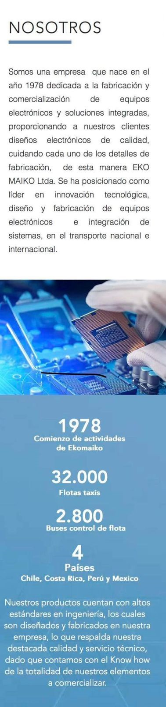
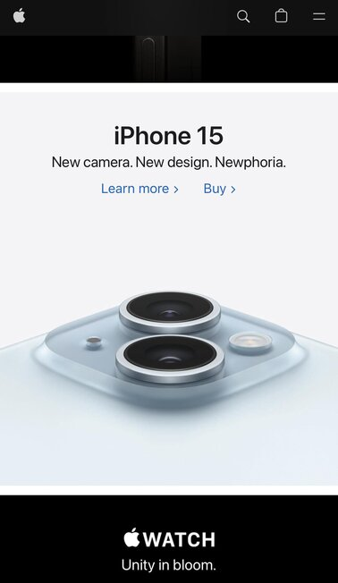

PARC: Contrast
Eko Maiko
Eko Maiko's Website

Eko Maiko has chosen colors and fonts that provide amazing readability through contrast. The font is very easy to read because of their color choices. I like how one section is black on a white background, then they almost reverse it with white text on a blue background.
PARC: Repetition
Banco Estado Chile
Banco Estado's WebsiteBanco Estado showcases it's offerings in a very reptitious mannner. Each icon is different but the shape and design of the icons are very homologous.
White Space and Clean Design
Apple
Apple's Website

Apple's website does a really good job of showcasing it's products in the middle of a white field. It draws the eye to the product and keeps the page incredibly clean. The whole page is quite minimalistic in colors. Mostly white and black.